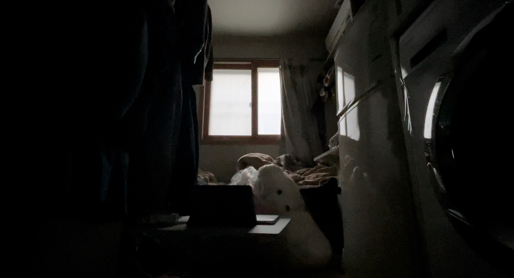

- 생색내기 좋은 곰인형
- 곰인형을 데리고 오면서
- 누구에게 생색을 낼 것인가
- 뉴턴공원

생색내기 좋은 인형을 사서 왔는데, 누구한테 생색내야 좋을지 모르겠다. 사실 나에게 생색내는 것도 생각해보지 않은 건 아니지만... 이 친구를 받아들이기에는 내 그릇이 너무 작다. 우리집은 작고 이 친구는 비대하달까(크달까)... 내 자리를 모두 차지해버렸다.
누구에게 생색내야 할지 아직 생각을 끝마치지 못했다.
몇 년이 지나도 누구에게 생색을 내야 할지 결론 내리지 않는다면 쟤는 계속 우리집에 있는 건가?
사실 결정하기 싫다.
이렇게 귀여운 걸 생색내며 주고싶지 않다.
낯이 익다고 생각했는데 우리 대두를 닮았다.
대두는 내가 11살이던 크리스마스 이브에 화명 롯데마트에서 2만원 행사를 해서 엄마가 나에게 크리스마스 선물로 사준 인형이다.
그해부터는 산타가 오지 않았다.
대두는 배가 나와 있었는데 몇 년간 내가 베개로 쓰면서 내 머리로 눌렀기에 홀쭉해졌다.
딱 나의 베개 사이즈로 알맞았다.
대두를 버리고 멀끔한 베개를 장만했지만 목이 결린다. 베개를 세 번은 바꾼 것 같은데 항상 베개가 불편하다.
늦은 밤 대두를 버리러 나갔을 때 헌옷수거함에 넣으며 일부러 쳐다보지 않으려 노력했다. 눈을 쳐다보면 안 될 것 같은 기분이었다.
십 년 넘게 사귄 친구를 버렸다.